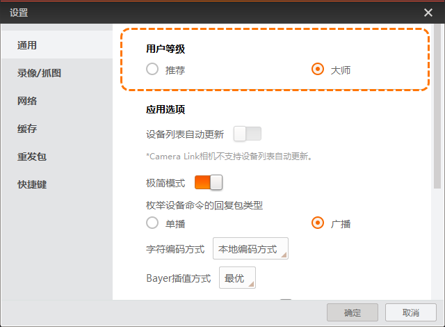
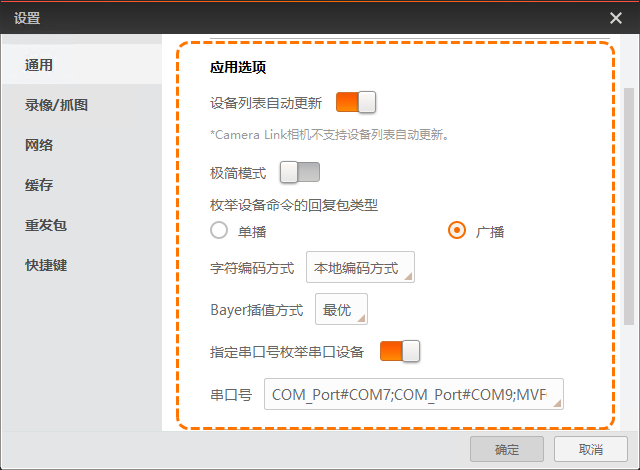
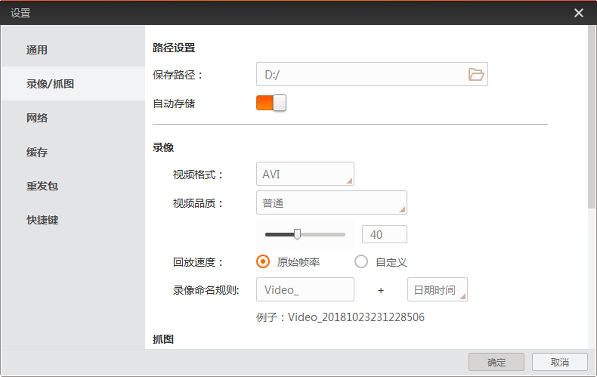
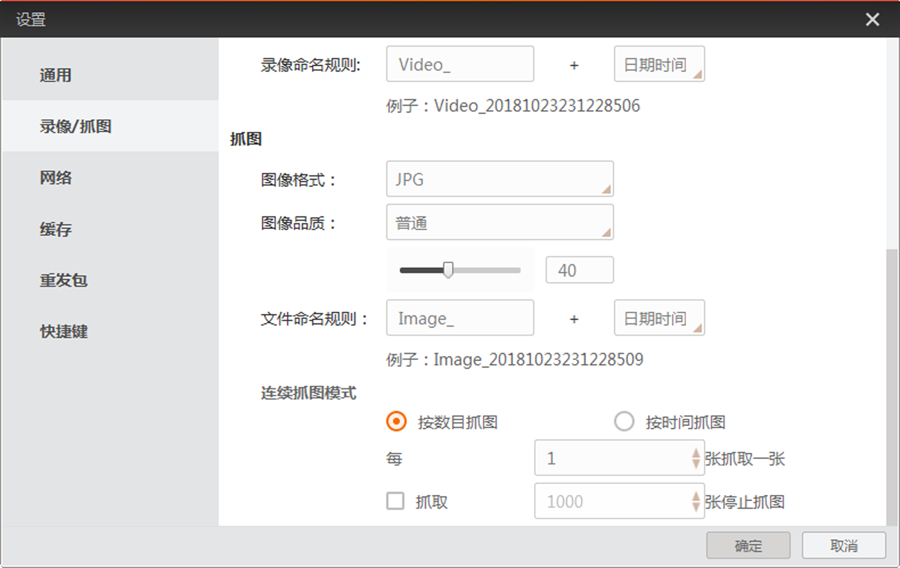

设置
通用设置
通用部分可根据用户需要切换用户等级，设置设备列表是否自动更新、字符串编码方式、Bayer插值方式和测温配置。
用户等级
分为推荐和大师两种。选择不同的用户等级，相机属性树栏开放的可以读写的参数有所差别。其中推荐只能查看部分相机参数；大师为最高用户级别，可以查看所有的相机参数。

图 1 用户等级应用选项
- 设备列表自动更新
-
启用设备列表自动更新，则每隔固定的时间，设备列表将对GigE和USB接口的在线设备执行自动刷新并显示的操作；若不勾选，则需要手动刷新才能使GigE和USB接口的在线设备进行刷新并显示。
说明-
自动刷新功能只针对GigE和USB接口的相机，对于Camera Link接口相机不生效。
-
Camera Link相机刷新较耗时，请通过设备列表中Camera Link接口右侧的
 进行手动刷新。
进行手动刷新。
-
- 极简模式
-
当客户端资源耗尽时，建议启用极简模式，例如大分辨率相机开启渲染功能等情景。启用后，客户端将不再自动刷新设备列表、属性树中的节点值、日志、状态等信息。
- 枚举设备命令的回复包类型
-
枚举网口设备时，可对设备数据包的回复类型进行配置。
- 字符编码方式
-
可以对客户端的字符串编码方式进行设置，可选本地编码方式和UTF-8。
- Bayer插值方式
-
可设置将Bayer格式转换成RGB格式的插值方式，可选快速、均衡和最优。
- 指定串口号枚举串口设备
-
当客户端连接串口设备时，启用指定串口号枚举串口设备后，可在串口号中下拉选择指定的串口号，并通过Serial Port接口对指定串口号下的设备进行枚举。

图 2 应用选项录像与抓图设置
录像/抓图部分可根据需要对录像以及抓图进行设置，包括存储的相关设置、录像偏好设置、抓图偏好设置等。
路径设置
可通过路径设置功能设置录像或者图像是否自动保存，并设置保存路径，如下图所示。
-
若启用自动存储功能，则录像或者图像直接保存在设置的保存路径下。
-
若不启用自动存储功能，则录像或者图像保存时，会弹出选择窗口，可对路径、文件名和保存的格式进行设置。默认弹出窗口的路径为设置的保存路径。

图 4 路径设置录像设置
图像预览过程中，若需要录像，可通过录像部分的参数设置视频格式、视频品质、视频的回放速度以及命名规则，如图 4所示。
抓图设置
图像预览过程中，若需要自动保存图像，可通过抓图部分的参数设置图像格式、图像品质、命名规则以及连续抓图模式，如下图所示。
- 图像格式
- 分为BMP、RAW、JPG、PNG以及TIFF五种格式。
- 图像品质
- JPG和PNG格式可设置图像品质，图像品质分为普通、较好以及最佳三种。1-40之间的品质分数属于普通级别，41-70之间的品质分数属于较好级别，71-100之间的品质分数属于最佳级别。默认的普通级别的品质分数为40，较好的品质分数为70，最佳的品质分数为100。若对品质分数没有过高的要求，建议下拉选择图像品质即可，不用调整品质分数的数值。说明
设置的图像品质越高，对系统资源消耗越大。请根据实际情况设置图像品质。
- 文件命名规则
- 文件命名规则的前缀可以自定义设置，后缀可以选择日期时间、递增索引或者时间戳的方式。
- 连续抓图模式
- 分为按数目抓图和按时间抓图两种。

图 5 抓图设置网络设置
缓存设置
重发包设置
快捷键设置
快捷键部分支持对客户端的常用功能进行快捷键设置，方便用户操作。
客户端常用功能与快捷键的默认关系请见下表。
|
功能 |
对应快捷键 |
|---|---|
|
连接/断开相机 |
F1 |
|
开始/停止采集 |
F2 |
|
开始/停止预览 |
F3 |
|
单次抓图 |
Ctrl + P |
|
录像/连续抓图 |
Ctrl + R |
|
全屏 |
F4 |
|
放大 |
Ctrl + + |
|
缩小 |
Ctrl + - |
|
自适应 |
Ctrl + 1 |
|
原比例 |
Ctrl + 2 |
用户可根据需求自行调整对应的快捷键：
-
修改：选中功能对应的文本框，同时按下组合快捷键即可。
说明修改快捷键时，不可使用Delete键。
-
删除：选中功能对应的文本框，按下Delete键即可删除快捷键。此时文本框显示为None，不能通过快捷键的方式使用该功能。
- 优先响应：当客户端最小化时，开启此功能则快捷键依旧对客户端生效。
-
恢复默认值：通过恢复默认值可将快捷键一键恢复为软件默认状态，即上表中的关联。